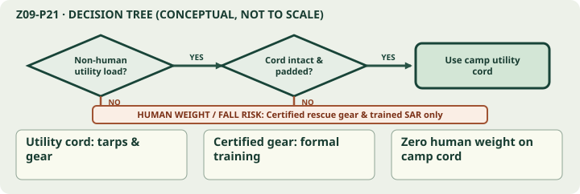

Z09-P21 · Tools and construction · New manuscript
Separate utility camp cordage from certified life-safety rigging
Enforce a hard boundary between camp utility string and certified climbing, rescue or fall-arrest equipment.
When it applies · All outdoor travel, camp setup, storm cleanup and rescue situations.
Equipment · Clear labeling and physical separation between camp utility cord and any specialized certified rescue gear.

Actions
- Treat paracord, hardware-store rope, tarp guylines, bungee cords and natural fibers strictly as non-life-safety utility lines—never use them to support human body weight, rappel, belay or arrest falls.[K09, K08]
- Recognize that life-safety ropes, harnesses and carabiners require independent standards certification (UIAA/CE/NFPA), documented fall history and formal technical training outside camp craft.[K09, K08, ED]
- Never attach bungee cords with open metal hooks under heavy stretch near eye level—rebound hook strikes cause severe eye trauma.[K08, K09, ED]
Failure recognition · Trying to lower a person down a wet bluff or rescue someone from a steep ravine using hardware-store utility rope or 550 paracord.[K09, K08]
Verify · Confirm zero human weight or fall-arrest risk is placed on camp utility cordage, improvised knots or unrated hardware.[K09, K08, ED]
Stop or change course · Any situation requiring vertical rope lowering, swiftwater tethering or technical cliff rescue exceeds camp-tool scope—stabilize on safe ground and summon trained SAR.[K09, T02, T06]
Evidence and editorial notes
- K08 · OSHA · Hand and Power Tools (OSHA 3080) (agency PDF)
- Section: Personal Protective Equipment and Work Area Control · Conditions: Cutting, splitting, striking and rigging operations
Support: Maintain stable footing, eye and hand protection appropriate to flying chips or snapped cordage, and clear bystanders outside the swing or snap-back zone.
Limitations: Field kits often lack shop PPE, requiring slower conservative technique and lower-energy methods. · Conflicting evidence: None; drives snap-back and work-circle exclusion zones in Z09.
Editorial note: Enforces conservative work circles and snap-back clearance. · Specialist reviewer: Tool safety and occupational safety
Primary source · checked 2026-11-24
Current assessment · A04-K08 (2026-11-25) · Open: support partial or missing (A04): Eye protection requirements are task-specific. Safe stance, glove choice and recoil envelope require each tool or rigging source. Limits: Specialist review PENDING (Tool safety and occupational safety); publication HOLD. All release decisions pending. - K09 · USDA Forest Service · Handtools for Trail Work (0523-2810-MTDC) (agency handbook)
- Section: Cordage, Anchors and Rigging Boundaries · Conditions: Non-life-safety camp lashing, tarps, haul lines and tie-downs
Support: Cordage strength drops significantly at knots, sharp bends, wet fibers, UV exposure and abrasion; inspect fibers before loading and never use unrated camp cord or improvised bindings for life-safety suspension or climbing.
Limitations: No universal breaking strength applies to natural plant fibers or weathered salvaged rope. · Conflicting evidence: Counters folklore claims equating improvised cordage to rated climbing rope.
Editorial note: Separates camp utility lashing/hauling from life-safety rigging. · Specialist reviewer: Rigging safety and materials mechanics
Primary source · checked 2026-11-24
Current assessment · W2C-E004 (2026-11-25) · Open: cited section not found in the source; escalated: Replacement support identified in FM 3-97.61 paras 4-1 to 4-3 (pages 4-1 to 4-3): sharp edges cut nylon rope under tension; leaving rope knotted or tightly stretched reduces strength and life over time; ultraviolet light deteriorates nylon; inspect before and after each use; select rope by task, type, diameter and tensile strength. Limits: No support found for the wet-fiber strength-loss part of K09. FM context is mountaineering rope, not camp cord. - T02 · American Red Cross · First Aid Steps (current web edition)
- Section: First Aid Steps > Call 9-1-1 · Conditions: Lay emergency response to unresponsiveness, abnormal breathing or severe bleeding
Support: Activate EMS and get needed equipment. Follow dispatcher directions and act within training.
Limitations: Remote locations may delay EMS arrival, requiring sustained stabilization after activation. · Conflicting evidence: None; aligns with NPS-E.
Editorial note: Mandates early emergency activation and dispatcher adherence. · Specialist reviewer: EMS and wilderness medicine
Primary source · checked 2026-11-24 - T06 · NPS · Outdoor Emergency Plan (current web edition)
- Section: If you get lost or hurt; call for help · Conditions: Outdoor US emergency
Support: Communicate location, last known point, situation and needs. Stay put when unable to establish a safe route unless immediate danger requires movement.
Limitations: Cell signal is unreliable in backcountry terrain; pre-trip plans bridge communication gaps. · Conflicting evidence: None; core lost-person decision rule.
Editorial note: Foundation for stay/signal/move and dispatch handoff cards. · Specialist reviewer: Search and rescue
Primary source · checked 2026-11-24
Source lineage · USFS cordage boundaries and OSHA safety; new manuscript · Classification · New manuscript.